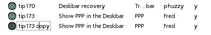

Sample Code
Inside the Projects folder are folders for each sample project. Each of those (exept for BePeople) contains a data folder, where its actual database lives. Open those folders in Tracker and dig around until you get a feel for how they're organized and which Attributes they're using. Experiment with attribute editing, column ordering, and file sorting if you're not already familiar with these Tracker techniques.
Next, run one of the included scripts.
Note: if you move this package to a location other than /boot/apps, you'll have to tweak a path statement at or near the top of each script before it will run properly.
For example, the BePeople script includes the following variable statement:
Base=/boot/apps/TrackerBase/projects/bepeople
Just edit this path to reflect the actual path if you installed elsewhere. Note also that the tipserver script has two path statements, one with weird slashes in it. If you use a different directory, be sure to edit both paths. I'll try to fix this in a future release.
To run a script, it must live in your /boot/home/config/bin directory. The installer placed these three scripts there, so they're ready to run:
TrackerBase.news TrackerBase.bepeople TrackerBase.tipsTo run the tutorials, open the tutorials folder and copy or move these scripts to /boot/home/config/bin.
TrackerBase.simple.1a TrackerBase.simple.1b TrackerBase.simple.1c TrackerBase.simple.1d TrackerBase.simple.1eAll scripts can be run by typing their name at any Terminal prompt.
Tip: If you need to run these scripts regularly, you may want to look into xicon, a utility that makes it easy to run shell scripts by clicking icons. It's a great complement to these tools.
A few seconds later, the output directory for that project will fill up with HTML pages. The default behavior is to put the menu page in the root of the output folder, and the data pages in a "bin" subdirectory specified in a variable. When the script is complete, its generated homepage will be launched in NetPositive (remove the last line of the scripts if you don't like this behavior). Poke around on this mini site and grok the relationship between the file contents, the attributes, and the HTML chunks in the parts folder.
Depending on your shell confidence, you may want to undertake a new project from scratch, or tweak and customize one of the existing projects. You may want to make a copy of the project that comes closest to your needs, then customize its database contents and start to pick at its associated script -- you can open them in any text editor, and will find them easier to read if you don't have line-wrapping enabled. All of the included scripts here are heavily commented, and they should serve as useful tutorials for those interested in learning something about bash.
Why a New Filetype?
You don't need to create a new filetype to do things like this, but you may need access to lots of attributes that have no use elsewhere on your system. Sure, you could just add lots of extra attributes to your text/plain filetype, but it seems cleaner to dedicate a new filetype to handling weird attributes that just wouldn't make sense connected up with text/plain. It's also nice to be able to tell at a glance (by their icons) the difference between your plain text files and your database files.Creating New Projects
If you want to create a new project from scratch, go for it. Read the How it Works overview, then duplicate a few files from one of the existing databases to begin populating your own.Creating New TrackerBase Files
There is no particular editor for TrackerBase files. They're just text documents with their preferred handler set to StyledEdit (you can change this from FileType preferences easily enough). However, note that if if you do a Save As from your favorite text editor, you will have created a file with a type of text/plain, rather than of text/trackerbase. The only real solution to this situation is to get in the habit of creating new files by duplicating existing ones and then changing their contents. This guarantees that all existing attributes will be present in the new file, and will conveniently pre-fill many attributes that you might otherwise have to do by hand. If anyone is interested in writing a People-like interface to TrackerBase files, go for it.

To create new TrackerBase files, always start by duplicating an existing one. This ensures that the new file has the right type, and that the attributes are already filled in, ready for editing. For best results, number your files sequentially. If any of your files link to each other, never rename your existing files, or the links will break. If you have to delete a record at some point, fine -- just leave a hole in the sequence. Otherwise you can get into chronology problems with some scripts.
Keeping Projects Separate
If you use queries in your project, you could run into a situation where your queries pick up files from other projects. For this reason, TrackerBase files have a "project" attribute which you can set for all of your files so they'll have a concrete identifier. No need to display this column in Tracker, for the most part. Just set it once, always create new files by duplicating, and your files will always "belong" firmly to a particular project. This mechanism also makes it possible to use a single filetype for all TrackerBase projects, rather than creating a new filetype for each project.Break It Up
The parts directory is where each project keeps large chunks of static HTML -- mostly page headers and footers. You can also make parts representing re-usable objects such as table headers, which you might want to invoke multiple times in a single page.When creating a new project, start with a page design you're happy with, then go through it and break out the pieces that are the same on every page. The easiest way to do this is to open the parts folder next to a Pe or StyledEdit window and drag selections from those editors into the parts folder. This will create clippings that you can then rename. While you're doing this, make a list of the part/variable/part order. This list can then become the "flow" foundation for your script. If necessary, mark your list so it's clear which parts are static and which parts dynamic. A list might look like:
(Indented lines represent variables you'll need)
HTMLHeader BodyTag PageTitle FormattingCode Headline ByLine Date PageContents TableStart TableRow TableClose HTMLFooterOnce you've got a structure list like this and have placed the parts into the parts directory, you can create a script from scratch or hack one of the existing ones.
Creating Scripts
I can't tell you exactly how your script will work or how to go about writing it, but between the sample scripts and the Snippets page, you have all the information you need. A few tips:- Work on one piece at a time, rather than trying to create a script all at once.
- Work out your commands, pipes, statements, etc. directly in the shell, so you can test them quickly without having to run the whole script. Remember to use the Up Arrow key to repeat the last shell command -- this makes it easy to keep editing a command until it does what it's supposed to do. You can then paste it from the shell into your script.
- Save copies as you work. If you need to make a major change to your script, do a SaveAs first, in case things get tangled up. This could potentially save you hours of backtracking.
- Think ahead. Try to envision the whole process before you begin. There are millions of ways to do the same thing, but some ways are better than others. Having a mental flowchart before you begin will help you keep things organized and help your script be more efficient. For example, if you want the user to be able to run the script from any Terminal prompt, the paths referenced in the script must always refer to the project's base directory. Otherwise it would run on the file's in the user's current directory. It's easier to know the implications of this before you start, rather than trying to patch the holes later.
Next: Attributes